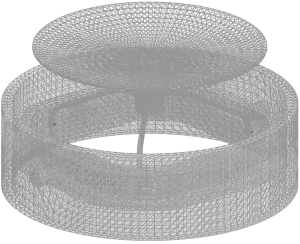
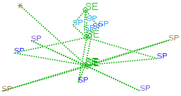

Modify the superelement display
 Simulation Navigator
Simulation Navigator
-
 gimbal_afem1.afm
gimbal_afem1.afm FEM Representation Display→Set all to base FEM approximation
FEM Representation Display→Set all to base FEM approximation
This option displays all superelements using a translucent, faceted representation of the base FEM topology.
 Simulation Navigator
Simulation Navigator
-
gimbal_afem1.afm FEM Representation Display→Set all to Super Element Symbol

The superelement symbol connects the boundary node locations to the superelement’s centroid. It is especially useful for visualizing and verifying connections.